ТЗ: Сквозная аналитика маркетинга FitBase
Техническая спецификация проекта сквозной аналитики маркетинга FitBase
Version 1.0 · 2026-03-05
1. Цель и контекст
Бизнес-контекст
FitBase — B2B SaaS CRM-система для фитнес-бизнеса. Подписочная модель (годовая подписка), средний чек ~100 000 ₽/год. Три основных рынка: Россия, Казахстан, Узбекистан.
Назначение системы
Заменить Rick.ai собственной сквозной аналитикой, которая:
- Связывает рекламные расходы по всем каналам и странам с лидами, MQL, SQL и оплатами в AmoCRM
- Даёт план-факт по каналам и странам
- Строит когорты по лидам (время от AmoCRM до покупки)
- Прогнозирует оплаты на основе пайплайна и исторических конверсий
- Отслеживает мультифилиальность (1 аккаунт → несколько сделок)
- Обеспечивает глубину до креатива (платные), до статьи (SEO), до площадки (посевы)
Основные KPI
| Параметр | Значение |
|---|---|
| Первичные KPI | Целевые лиды (MQL/SQL) и продажи |
| Лидов / мес | ~1 000 |
| Целевых (MQL) | ~300 / мес |
| Цикл сделки | ~30 дней |
| Повторные продажи | Есть (мультифилиальность) |
| Модель подписки | Годовая (LTV/чурн не считаем) |
Требуемые разрезы
| Разрез | Описание |
|---|---|
| Страна | РФ / КЗ / УЗ |
| Канал | Яндекс.Директ, Google Ads, Meta, VK, Telegram Ads, TikTok, YouTube, SEO, SMM, посевы, вебинары, партнёрка, email, звонки, мессенджеры |
| Кампания | Рекламная кампания внутри канала |
| Креатив | Конкретное объявление / баннер / видео |
| Стадия воронки | Текущая стадия лида в AmoCRM |
| Период | День / неделя / месяц / произвольный диапазон |
Пользователи
| Роль | Доступ | Частота |
|---|---|---|
| Руководитель маркетинга | Все дашборды, все разрезы | Ежедневно |
| Маркетологи по каналам | Свой канал + общая картина | Ежедневно |
| Подрядчики | Свой канал | По запросу |
| CEO | Только Executive Overview | Еженедельно |
2. Архитектура
Выбор компонентов
| Компонент | Решение | Почему |
|---|---|---|
| Визуализация | Yandex DataLens | Команда имеет опыт (FitbaseLab), бесплатный, доступен в РФ |
| Хранилище | ClickHouse (Yandex Cloud) | Нативная интеграция с DataLens, быстрые аналитические запросы |
| ETL | Python-скрипты | Команда уже имеет паттерн (amocrm-analytics/etl/sync.py) |
Частота обновления
| Источник | Частота | Метод |
|---|---|---|
| AmoCRM | Webhook + 1 раз/час | API v4 |
| Рекламные кабинеты | 1 раз/день (06:00) | API платформ |
| Яндекс.Метрика | 1 раз/день (07:00) | Reporting API |
| BotHelp | 1 раз/день | API |
| Ручной ввод | По факту | Google Sheets → ETL |
Стоимость инфраструктуры
| Компонент | Стоимость (оценка) |
|---|---|
| ClickHouse (Yandex Cloud) | ~3 000–5 000 ₽/мес |
| ETL (Cloud Functions / VPS) | ~1 000–2 000 ₽/мес |
| DataLens | 0 ₽ |
| Итого | ~4 000–7 000 ₽/мес |
3. Модель данных
Центральные таблицы
leads — сделки AmoCRM
| Поле | Тип | Описание |
|---|---|---|
| lead_id | INT | PK, AmoCRM deal.id |
| account_id | INT | FK → accounts (мультифилиальность) |
| pipeline_id | INT | Воронка (Теплые / Вебинары) |
| current_stage | VARCHAR | Текущая стадия |
| lead_type | ENUM | Lead / MQL / SQL |
| country | ENUM | RF / KZ / UZ |
| deal_value | DECIMAL | Поле «Бюджет» = сумма сделки, ₽ |
| created_at | TIMESTAMP | Дата создания лида |
| closed_at | TIMESTAMP | Дата закрытия |
| is_won / is_lost | BOOLEAN | Результат |
| utm_source, utm_medium, utm_campaign, utm_content, utm_term | VARCHAR | UTM-разметка |
| first_touch_source | VARCHAR | Первый источник (для мультитач) |
stage_history — история переходов
Критично для Pipeline Velocity и когорт: lead_id, stage_from, stage_to, changed_at, time_in_stage_hours.
accounts — мультифилиальность
Contact/Company из AmoCRM: account_id, total_deals, total_value, is_multi_branch.
ad_costs — расходы на рекламу
Ежедневно по кампаниям: date, country, channel, campaign, creative, impressions, clicks, spend.
web_sessions — веб-аналитика
Из Яндекс.Метрики / GA: по страницам и статьям (для SEO-аналитики).
bot_sessions — BotHelp
Подписчики ботов: шаги воронки, связка с лидом AmoCRM.
plans — плановые значения
Из Google Sheets: по месяцам, странам, каналам. Метрики: budget, leads, mql, sql, sales, revenue.
Расчётные метрики
| Метрика | Формула |
|---|---|
| CPL | spend / COUNT(leads) |
| CPA MQL | spend / COUNT(MQL) |
| CPA SQL | spend / COUNT(SQL) |
| CAC | spend / COUNT(won) |
| Revenue per MQL | SUM(deal_value WHERE won) / COUNT(MQL) |
| Pipeline Velocity | (MQL × CR_won × AVG_deal) / AVG_cycle_days |
| Net Revenue per Lead | SUM(account.total_value) / COUNT(leads per account) |
4. UTM-конвенция
| Параметр | Формат | Примеры |
|---|---|---|
utm_source | Платформа, lowercase | yandex, google, meta, vk, telegram, seeding, seo, smm, partner, webinar, email, bothelp |
utm_medium | Тип трафика | cpc, cpm, social, organic, seeding, email, referral, bot, event |
utm_campaign | {GEO}_{описание} | RF_poisk_kommercheskie, KZ_leadform_studio |
utm_content | Креатив | banner-v2, video-testimonial-01 |
utm_term | Ключевое слово | crm для фитнес клуба |
Примеры ссылок
https://fitbase.io/?utm_source=yandex&utm_medium=cpc&utm_campaign=RF_poisk_kommercheskie&utm_content=text-ad-v3&utm_term={keyword}
https://fitbase.tech/?utm_source=meta&utm_medium=cpc&utm_campaign=KZ_leadform_studio&utm_content=video-testimonial-01
Текущее состояние UTM в AmoCRM
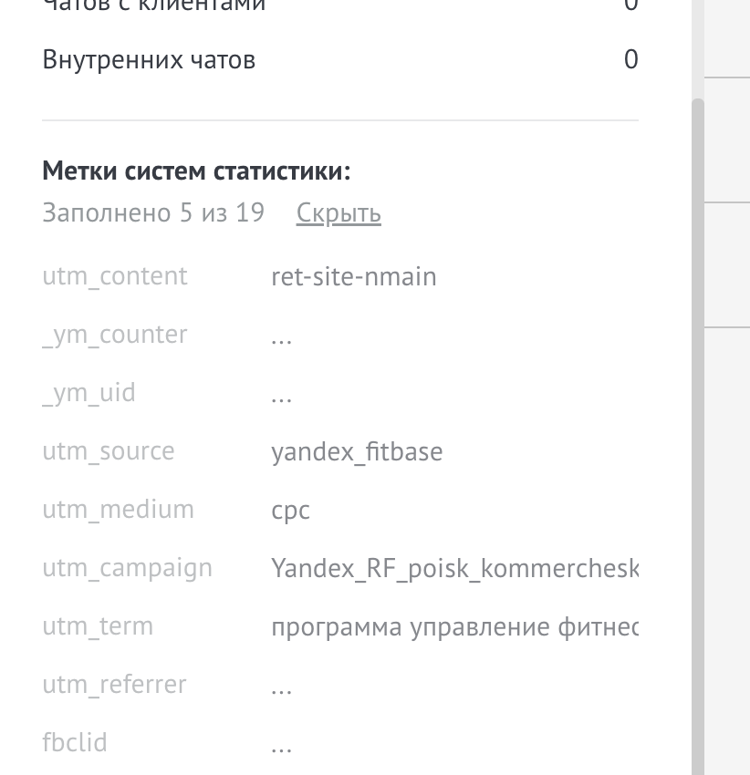
5. Интеграции
| Источник | API | Данные | Частота |
|---|---|---|---|
| AmoCRM | API v4 + Webhooks | Сделки, контакты, события, стадии, кастомные поля (Тип заявки, UTM) | Webhook + 1р/час |
| Яндекс.Директ | API v5 | Расходы, показы, клики по кампаниям/объявлениям (РФ) | 1р/день |
| Google Ads | API v17+ | Расходы, показы, клики (КЗ, УЗ) | 1р/день |
| Meta Marketing | API v19+ | Расходы, креативы, конверсии (КЗ, УЗ) | 1р/день |
| VK Ads | VK Ads API | Расходы, показы, клики (РФ) | 1р/день |
| Telegram Ads | API / CSV | Расходы, показы (РФ) | 1р/день |
| Яндекс.Метрика | Reporting API | Трафик по страницам, конверсии, UTM (все домены) | 1р/день |
| Google Analytics | Data API v1 | Трафик КЗ/УЗ (при установке GA) | 1р/день |
| BotHelp | REST API | Подписчики, шаги воронки, связка с AmoCRM | 1р/день |
| Ручной ввод | Google Sheets API | Посевы, ивенты, партнёрка, планы | По факту |
6. Спецификация дашбордов
10 основных дашбордов + 6 дополнительных модулей. Дизайн-референс: Elly Analytics B2B Dashboard (тёмная тема, чистые карточки, спарклайны).
Дашборд 1: Executive Overview (CEO)
Аудитория: CEO + маркетинг Частота: еженедельно
Один экран — здоровье маркетинга за 30 секунд. 6 KPI-карточек со спарклайнами + воронка + таблица по странам.
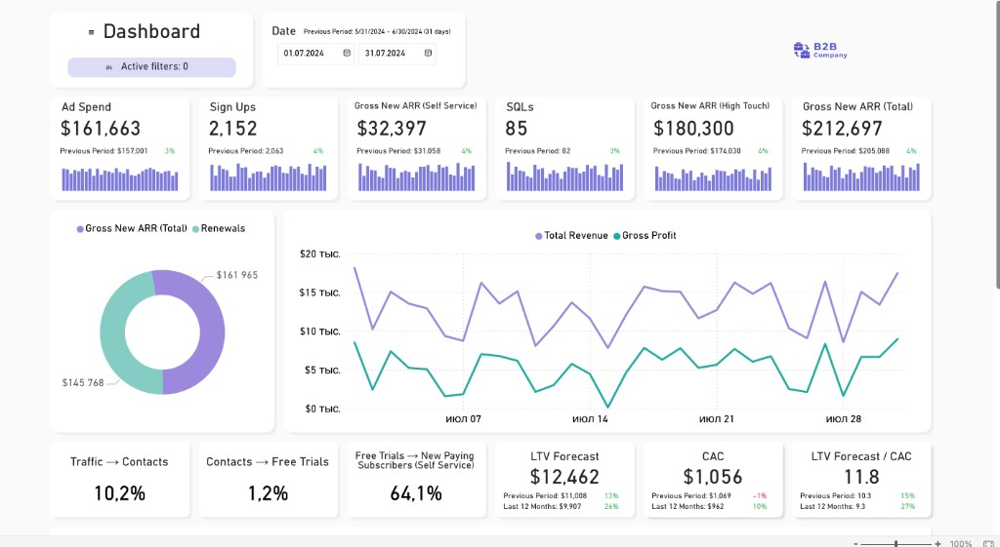
| Карточка | Метрика | Сравнение |
|---|---|---|
| 1 | MQL за период | vs план (%), vs пред. период |
| 2 | Продажи (оплаты) | vs план (%), vs пред. период |
| 3 | Выручка | vs план (%), vs пред. период |
| 4 | CAC | vs пред. период |
| 5 | Pipeline Coverage | Норма: ≥ 3x |
| 6 | Бюджет (расходы) | vs план (%) |
Дашборд 2: Operational Pulse
Аудитория: маркетинг Частота: ежедневно
Утренний чек в 10:00: что произошло вчера, что горит сегодня. Алерты: лиды без обработки >24ч, застрявшие на стадии >7 дней, бюджет >110% плана.
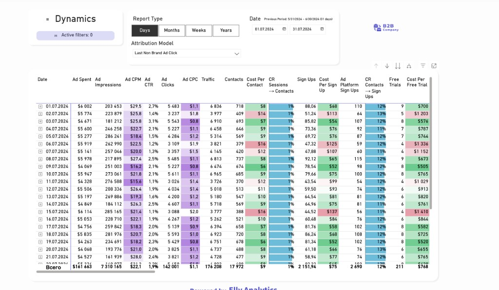
Дашборд 3: Full Funnel Waterfall
Аудитория: маркетинг + CEO
Полная воронка: Лиды → В обработке → MQL → Встреча → SQL → КП → Оплата. Абсолютные числа + CR между шагами. Таблица — воронка по каналам.
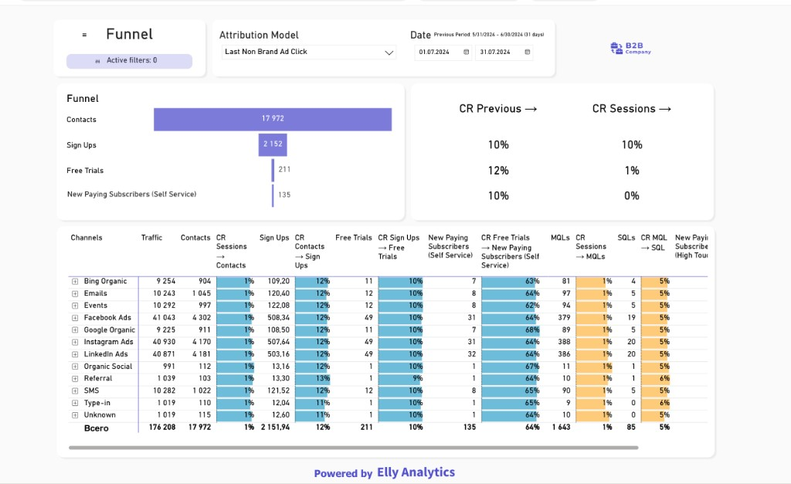
Дашборд 4: Channel Performance
Аудитория: маркетинг
Все каналы (включая минорные) с полной воронкой метрик. Раскрывающееся дерево: канал → кампания → креатив.
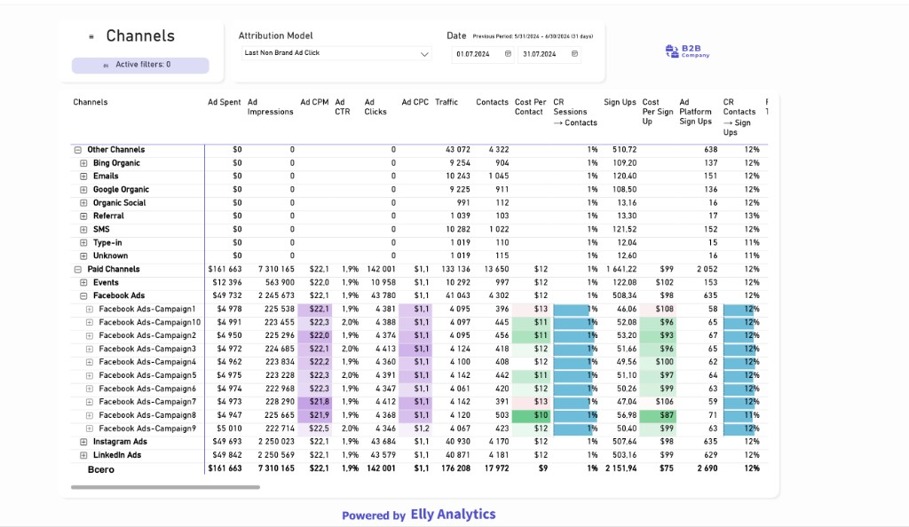
Метрики: Spend, Impressions, Clicks, CTR, CPC, Leads, CPL, MQL, CPA_MQL, SQL, CPA_SQL, Won, CAC, Revenue, ROAS, Revenue per MQL, Pipeline Velocity.
Дашборд 5: Plan/Fact (Variance)
Аудитория: маркетинг + CEO
Месячный план-факт по каналам и странам. Три строки на канал: план / факт / %. Цветовая кодировка: зелёный ≥100%, красный <90%.
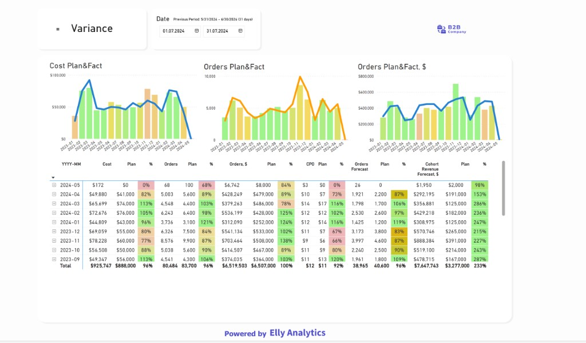
Дашборд 6: Lead Cohorts
Аудитория: маркетинг
Когортная матрица: строки = недельные/месячные когорты (по дате входа в AmoCRM), столбцы = Week 0–8. Значения: оплаты или выручка. Фильтр по каналу — видно, как «раскрывается» когорта.
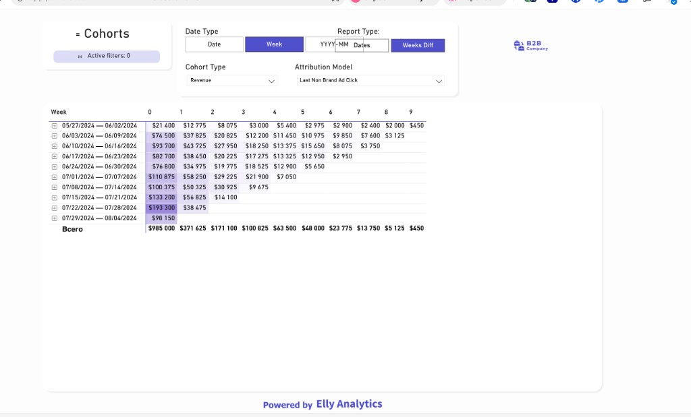
Дашборд 7: Forecast
Аудитория: маркетинг + CEO
Три модели прогноза: Pipeline-based (высокая точность, 1–2 недели), Cohort-based (средняя, 30–45 дней), Trend-based (грубая, для алертов). По каналам и странам.
| Тип прогноза | Логика | Точность |
|---|---|---|
| Pipeline-based | Сделки на стадиях × историч. CR стадии→Won | Высокая |
| Cohort-based | Лиды текущего месяца × историч. CR когорты | Средняя |
| Trend-based | 7-day rolling → экстраполяция на конец месяца | Грубая |
Дашборд 8: SEO / Content
Аудитория: маркетинг + SEO
По каждой странице и статье: визиты, уники, заявки, CR, MQL. Динамика статьи во времени. По доменам: fitbase.io / fitbase.tech / fitbase.uz.
Дашборд 9: Campaigns & Creatives
Аудитория: маркетологи по каналам
Визуальные карточки креативов (как у Elly) с превью, метриками и сортировкой.
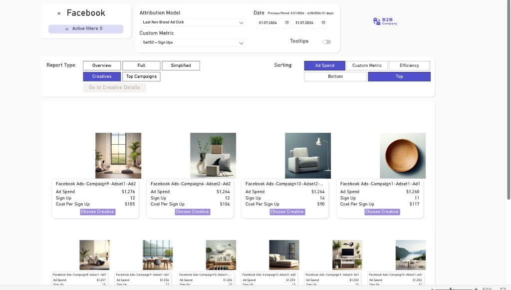
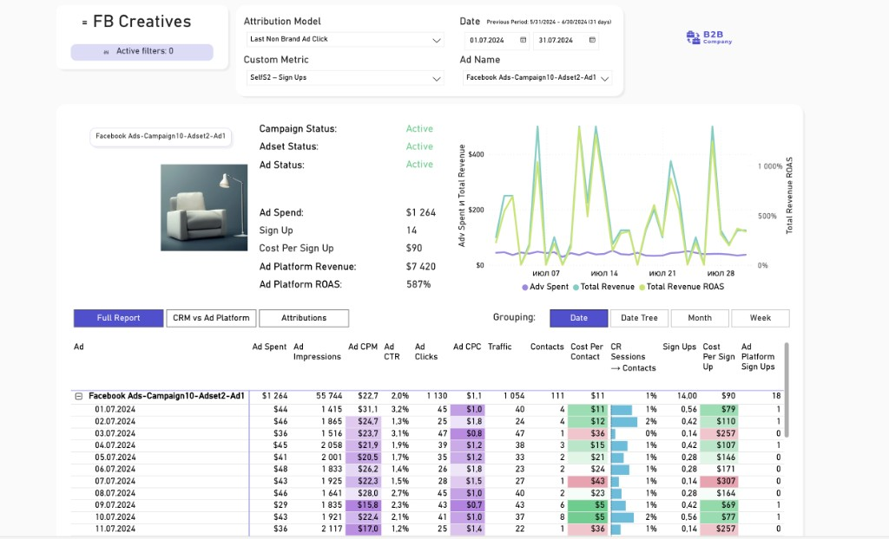
Дашборд 10: Pipeline & Velocity
Аудитория: маркетинг + CEO
Текущий пайплайн по стадиям, медианное время на каждой стадии (bottleneck), Pipeline Velocity по каналам, Account-Level View (мультифилиальность).
Текущий пайплайн AmoCRM
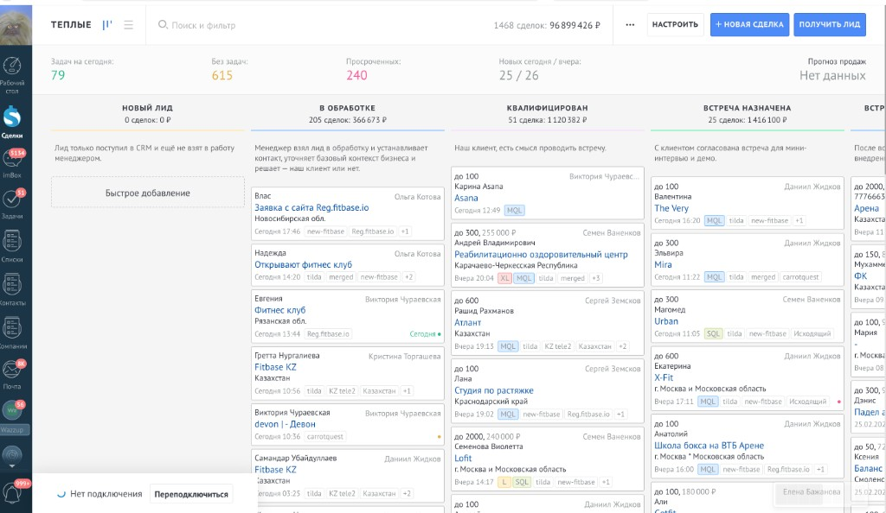
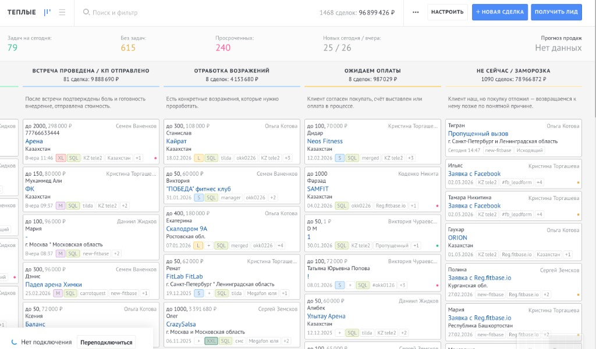
Дополнительные модули (Phase 2+)
| Модуль | Описание |
|---|---|
| Вебинарная воронка | Регистрация → участие → MQL → SQL → оплата |
| BotHelp-воронка | Подписка → шаги бота → лид → MQL → оплата |
| Посевы | Площадки, расходы, охваты, переходы → ROAS |
| SMM | Охваты, подписчики, отток, воронка |
| Email/SMS/Push | Все каналы + assisted conversions |
| Telegram-алерты | Ежедневный отчёт в 10:00 + аномалии |
7. Методология прогноза
Pipeline-based Forecast
Формула: Forecast = Σ (deals_on_stagei × CR_stagei_to_won)
CR рассчитывается по данным за последние 6 месяцев.
| Стадия | Сделок | Историч. CR→Won | Прогноз оплат |
|---|---|---|---|
| Квалифицирован | 51 | 25% | 13 |
| Встреча назначена | 25 | 40% | 10 |
| Встреча / КП | 81 | 50% | 41 |
| Возражения | 8 | 70% | 6 |
| Ожидаем оплаты | 11 | 90% | 10 |
| Итого | 80 |
Cohort-based Forecast
Лиды текущего месяца конвертируются по паттерну предыдущих когорт (с разбивкой по каналу).
Формула:
Forecast = LeadsM-2 × CRage_60d + LeadsM-1 × CRage_30d + LeadsM × CRage_0-15d
Trend-based Forecast
Формула: Forecast = Wonlast_7d / 7 × days_remaining + WonMTD
Грубый, но полезен для ранних алертов: если темп <80% от плана на 10-й день → сигнал.
8. Account-Level Tracking
Один аккаунт (сеть/франшиза) может подключить несколько филиалов. Без account-level tracking каналы, приводящие сетевых клиентов, недооцениваются.
| Метрика | Формула |
|---|---|
| Total Account Value | SUM(deal_value) всех сделок аккаунта |
| Expansion Revenue | Total Account Value − первая сделка |
| Expansion Rate | Аккаунты с >1 deal / все аккаунты |
| Net Revenue per Lead | Total Account Value / leads per account |
Атрибуция: Expansion Revenue → первому каналу (first-touch).
9. Этапы реализации
Нед. 1–3 → Нед. 4–7 → Нед. 7–10 → Нед. 10–16
MVP (2–3 недели)
AmoCRM ETL → ClickHouse. Дашборды: Executive Overview, Full Funnel, Channel Performance (без расходов).
Расходы + План-факт (3–4 недели)
ETL рекламных кабинетов (Яндекс, Google, Meta, VK). UTM-стандартизация. Дашборды: Plan/Fact, Campaigns & Creatives.
Когорты + Прогноз + SEO (3–4 недели)
Lead Cohorts, Forecast (3 модели), Pipeline & Velocity, SEO/Content, Operational Pulse.
Модули (4–6 недель)
BotHelp, вебинарная воронка, посевы, SMM, Email/SMS, Telegram-алерты, TikTok/YouTube.
10. Требования к дизайну
| Элемент | Требование |
|---|---|
| Тема | Тёмная (dark mode) |
| KPI-карточки | Крупное число + спарклайн + delta vs пред. период |
| Таблицы | Компактные, тепловая карта для %, цветовая кодировка |
| Графики | Минималистичные, без лишней декорации |
| Палитра | Акцент FitBase (синий) + зелёный/красный/жёлтый |
Референс: Elly Analytics (нравится)
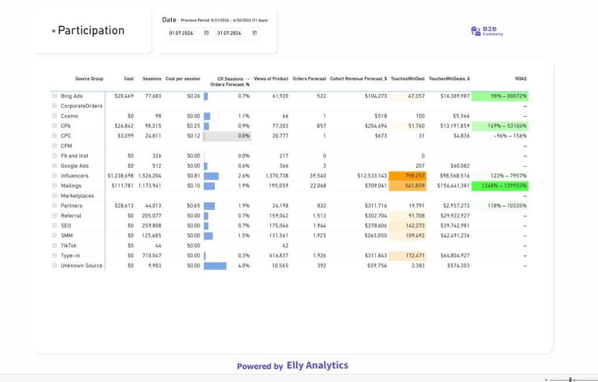
Текущие дашборды FitbaseLab (НЕ нравится визуально)
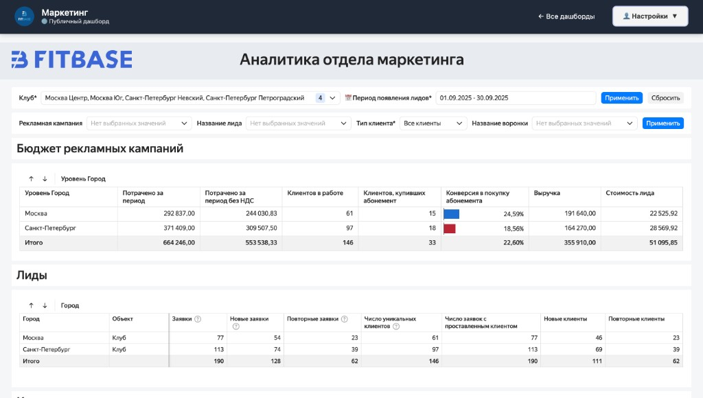
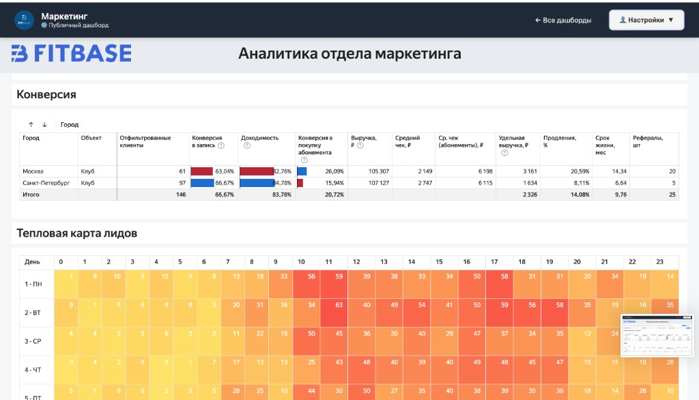
Навигация
Все 10 дашбордов — один воркбук DataLens с табами:
FitBase Marketing Analytics · ТЗ v1.0 · 2026-03-05
Полная версия (Markdown): TZ_Skvoznaya_Analytika.md